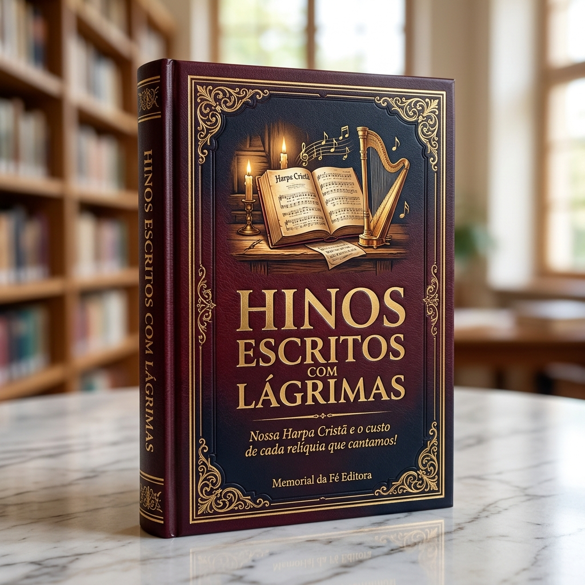

MEMORIAL DA FÉ EDITORA • COLEÇÃO RELÍQUIAS SAGRADAS
HINOS ESCRITOS
COM LÁGRIMAS
Nossa Harpa Cristã e o custo de cada relíquia que cantamos!

Uma jornada profunda e comovente pelos quartos escuros, prisões, epidemias, perdas e renúncias de homens e mulheres que transformaram a maior dor de suas vidas nas estrofes imortais que hoje consolam a Igreja de Cristo.
Edição Oficial • Em parceria com o Canal Ecos da Fé Cristã
youtube.com/@ecosdaf • contato@memorialdafe.com.br
📜 Prefácio: O Preço Oculto em Cada Acorde
Quando abrimos a nossa querida Harpa Cristã ou entoamos um daqueles hinos antigos que nossos pais e avós cantavam de olhos fechados, raramente paramos para fazer uma pergunta silenciosa: quanto custou para que essa letra chegasse até nós?
Diferente de muitas canções superficiais dos tempos modernos, compostas apenas para preencher palcos, as relíquias sagradas da hinologia cristã não foram escritas em escritórios confortáveis. Elas foram forjadas na fornalha. Foram escritas por uma menina que ficou cega com seis semanas de vida; por um pastor que enterrou quatro mil ovelhas e a própria esposa durante a peste; por um jovem teólogo abandonado pela noiva ao perder a visão; por uma família que preferiu enfrentar as flechas do martírio a negar o nome de Jesus.
Cada estrofe que você lerá neste livro carregou o peso de uma cruz real antes de se tornar um bálsamo para a sua alma. Que a leitura destas dez histórias verídicas transforme para sempre a maneira como você canta ao Senhor.
📖 Sumário das Relíquias
- Capítulo 1: A Menina Cega que Viu o Trono de DeusFanny Crosby — "A Deus Seja a Glória", "Perto da Cruz" e 8.000 Hinos
- Capítulo 2: O Pastor Sitiado que Fazia Cinquenta Funerais por DiaMartin Rinkart — "Graças Dou por Esta Vida" (1636)
- Capítulo 3: O Noivo Cego Abandonado à Véspera do AltarGeorge Matheson — "Amor que por Amor Desceste" (1882)
- Capítulo 4: O Homem Doente que Nunca Viu um Milagre EspetacularThomas Chisholm — "Tu És Fiel, Senhor (Grande é a Tua Fidelidade)" (1923)
- Capítulo 5: O Órgão Roído pelos Ratos e a Trégua nas TrincheirasJoseph Mohr & Franz Gruber — "Noite Feliz (Silent Night)" (1818)
- Capítulo 6: A Jovem Inválida que Se Sentia Inútil para DeusCharlotte Elliott — "Tal Qual Estou (Just As I Am)" (1835)
- Capítulo 7: O Pregador que Perdeu a Voz e Ganhou uma HarpaWilliam Orcutt Cushing — "Debaixo das Asas de Deus" e "Jóias Preciosas"
- Capítulo 8: O Sangue nas Montanhas de Assam e a Fé InegociávelNokseng — "Eu Resolvi Seguir a Cristo (Não Volto Atrás)" (Século XIX)
- Capítulo 9: A Tempestade de Neve e o Abrigo na Rocha FendidaFanny Crosby & William Kirkpatrick — "Esconde-me na Rocha (Oh, Quão Doce!)"
- Capítulo 10: A Epopeia da Nossa Harpa Cristã no BrasilAlmeida Sobrinho, Paulo Leivas Macalão e o Preço das Relíquias Brasileiras
Capítulo 1: A Menina Cega que Viu o Trono de Deus
🎼 "A Deus Seja a Glória", "Perto da Cruz" e mais de 8.000 Relíquias — Fanny Crosby
🌑 Seis Semanas de Luz e Noventa e Quatro Anos de Escuridão
Frances Jane Crosby nasceu em uma humilde cabana no interior do estado de Nova York, em março de 1820. Quando tinha apenas seis semanas de vida, uma leve inflamação atingiu seus olhos. O médico da região estava ausente, e um homem que se dizia doutor recomendou a aplicação de cataplasmas quentes de mostarda diretamente sobre as pálpebras da recém-nascida. O tratamento queimou irreversivelmente suas córneas. Antes de completar dois meses, a pequena Fanny mergulhou na escuridão física absoluta; poucos meses depois, seu pai adoeceu e morreu, deixando a jovem mãe viúva trabalhando como empregada doméstica.
Quem olhasse para aquela criança pobre, órfã de pai e cega no século dezenove diria que sua vida estava condenada ao esquecimento. Mas sua avó cristã, Eunice Crosby, tomou a menina no colo e decidiu ser os olhos dela. Durante horas a fio, a avó descrevia o pôr do sol, o formato das nuvens, as cores dos pássaros e, acima de tudo, lia a Bíblia inteira para a neta até que Fanny memorizasse de cor todo o Pentateuco, os quatro Evangelhos, os Salmos e Provérbios inteiros.
💔 A Epidemia de Cólera e o Berço Vazio
Aos quinze anos, Fanny ingressou no Instituto para Cegos de Nova York, onde mais tarde se tornou professora. Em 1849, uma devastadora epidemia de cólera varreu a cidade. Recusando-se a fugir, a jovem cega caminhava pelos corredores escuros da enfermaria cuidando dos moribundos, segurando mãos geladas e sussurrando promessas bíblicas no ouvido de dezenas de alunos que partiam para a eternidade. Exausta e traumatizada pela morte ao redor, foi em novembro de 1850 — justamente enquanto a igreja cantava o hino "Foi na Cruz" de Isaac Watts — que Fanny sentiu a luz do Espírito Santo inundar sua alma.
Anos depois, já casada com o músico cego Alexander Van Alstyne, Fanny deu à luz uma criança. Mas a alegria durou pouco: o pequeno bebê faleceu subitamente durante o sono. Fanny guardou aquela dor materna no mais íntimo do seu peito, quase nunca mencionando o episódio em público, mas canalizando cada lágrima daquele berço vazio para consolar milhões de mães e corações feridos através da poesia sagrada.
✨ Oito Mil Cânticos na Ponta dos Dedos
Fanny Crosby escreveu mais de oito mil hinos — um recorde na história da cristandade, tantos que os editores precisavam criar dezenas de pseudônimos para não preencher os hinários apenas com o nome dela. Ela jamais aceitou enriquecer com suas letras: vendia seus poemas por um ou dois dólares cada e vivia em apartamentos modestos perto das favelas de Manhattan e Bridgeport, doando tudo aos pobres nas missões urbanas.
Certa vez, um pastor bem-intencionado disse a ela com pena: "Fanny, acho uma lástima que o Senhor, tendo lhe concedido tantos dons, não lhe tenha dado o dom da visão." A resposta dela calou o salão inteiro:
"Você sabe que, se no dia do meu nascimento eu pudesse ter feito uma petição a Deus, teria pedido exatamente para nascer cega? Porque, quando eu chegar ao céu, o primeiro rosto que já terá enchido a alegria dos meus olhos por toda a eternidade será o rosto do meu Salvador!"
Foi dessa visão interior inabalável que brotaram estrofes que hoje cantamos de joelhos:
"Perto da cruz quero estar, / Junto aos pés do meu Senhor; / Pois ali, a transbordar, / Corre a fonte de amor!
Na cruz, na cruz, / Seja a minha glória sempre! / Té que a minha alma enfim descanse / Salva além do rio!"
⚓ Versículo Âncora
"Porque andamos por fé, e não por vista." — 2 Coríntios 5:7
🙏 Oração do Memorial
"Senhor meu Deus, perdoa-me pelas vezes em que murmurei diante das limitações da minha jornada. Abre os olhos espirituais do meu coração como fizeste com Tua serva Fanny Crosby, para que mesmo nas noites mais escuras desta terra eu contemple a beleza da Tua cruz e o brilho do Teu trono. Em nome de Jesus, Amém."
Capítulo 2: O Pastor Sitiado que Fazia Cinquenta Funerais por Dia
🎼 "Graças Dou por Esta Vida (Nun danket alle Gott)" — Martin Rinkart
⚔️ A Cidade Cercada pela Fome e pela Morte
Poucos períodos da história europeia foram tão tenebrosos quanto a Guerra dos Trinta Anos (1618–1648). Em 1636, a pequena cidade murada de Eilenburg, na Saxônia, tornou-se o refúgio desesperado de milhares de camponeses e fugitivos que escapavam dos exércitos invasores. A superlotação atrás das muralhas trouxe consigo dois cavaleiros implacáveis: a fome absoluta e a Grande Peste de 1637.
Havia quatro pastores na cidade quando a peste começou. Um deles abandonou o rebanho e fugiu para salvar a própria pele; os outros dois contraíram a doença e morreram rapidamente. Restou apenas um homem de pé entre os vivos e os mortos: o pastor luterano Martin Rinkart, então com cinquenta anos de idade.
⚰️ Quatro Mil e Quatrocentos Sepultamentos
O cenário dentro dos muros de Eilenburg desafia a imaginação moderna. Os registros históricos preservados mostram que, apenas no ano de 1637, Martin Rinkart oficiou pessoalmente o sepultamento de quatro mil, quatrocentas e oitenta pessoas. Nos dias mais críticos da epidemia, ele realizava entre quarenta e cinquenta funerais por dia. Quando não havia mais madeira para caixões, famílias inteiras eram depositadas em valas comuns enquanto Rinkart, sob chuva ou sol escaldante, lia a Palavra de Deus e orava sobre a terra aberta.
Em maio daquele mesmo ano fatídico, o golpe mais cruel bateu à porta da casa pastoral: a esposa amada de Martin Rinkart adoeceu e faleceu. Com o coração em pedaços, ele mesmo precisou conduzir o funeral da companheira de sua vida e voltar para casa a fim de cuidar dos filhos famintos. A escassez era tamanha que Rinkart empenhou todas as suas futuras rendas para comprar migalhas de pão para os órfãos da cidade; nas ruas, trinta ou quarenta pessoas disputavam o corpo de um corvo morto ou de um gato para não morrerem de inanição.
🍞 O Cântico na Mesa Quase Vazia
Como um homem que sepultou a esposa, viu a cidade dizimada e não tinha quase nada para pôr no prato dos filhos reagiu diante de Deus? Sentando-se à mesa com suas crianças diante de uma porção mínima de alimento, Martin Rinkart escreveu uma oração cantada para que seus filhos recitassem todos os dias antes de comer. Naquele vale de sombras, ele não escreveu um poema de amargura, mas o maior hino de ação de graças da história cristã:
"Agora graças dai a Deus, com coração, voz e mãos,
Que grandes coisas fez em nós e em todos os cristãos;
Que desde o berço maternal nos conservou a vida,
E até aqui nos concedeu mercê imerecida!
O Deus eterno e bom nos dê, enquanto aqui vivermos,
Alegre e grato coração, e a paz que d'Ele temos!"
Séculos mais tarde, adaptado também em nossas igrejas como "Graças dou por esta vida, pelo bem que revelou; graças dou pelo futuro, e por tudo que passou", o hino de Rinkart permanece como um monumento eterno à fé que agradece mesmo quando tudo ao redor desaba.
⚓ Versículo Âncora
"Em tudo dai graças, porque esta é a vontade de Deus em Cristo Jesus para convosco." — 1 Tessalonicenses 5:18
🙏 Oração do Memorial
"Pai Santo, cala em meus lábios toda reclamação. Quando olho para a fidelidade de Teu servo Martin Rinkart agradecendo pelo pão escasso em meio à peste e ao luto, meu coração se quebranta. Ensina-me a louvar-Te não apenas nos dias de fartura, mas também no deserto. Em nome de Jesus, Amém."
Capítulo 3: O Noivo Cego Abandonado à Véspera do Altar
🎼 "Amor que por Amor Desceste (O Love That Wilt Not Let Me Go)" — George Matheson
💔 "Não Quero Ser Esposa de um Homem Cego"
George Matheson nasceu em Glasgow, na Escócia, em 1842. Dotado de uma inteligência brilhante, ingressou na Universidade de Glasgow e destacou-se como o primeiro aluno de sua turma em filosofia e teologia. Na juventude, apaixonou-se profundamente por uma jovem colega e os dois ficaram noivos, planejando o casamento e o ministério pastoral juntos.
Porém, durante os estudos finais, a visão de George começou a escurecer rapidamente. O diagnóstico médico foi uma sentença sem apelação: atrofia irreversível do nervo óptico. Em poucos meses, ele ficaria completamente cego pelo resto da vida. Com o coração trêmulo, George procurou a noiva para contar a verdade. A reação dela foi uma punhalada que atravessou sua alma: ela devolveu a aliança e declarou friamente que "não poderia atravessar a vida inteira presa a um homem cego".
🌧️ A Noite Solitária do Casamento da Irmã
Após o abandono da noiva, a irmã mais nova de George assumiu o compromisso de cuidar dele. Ela aprendeu grego, latim e hebraico apenas para ler os textos teológicos para o irmão, ajudando-o a se tornar um dos pregadores mais amados de toda a Escócia — a ponto de a própria Rainha Vitória viajar para ouvi-lo pregar.
Mas na noite de 6 de junho de 1882, quando George tinha quarenta anos, essa irmã que cuidava dele casou-se. Toda a família viajou para a festa do casamento. George ficou absolutamente sozinho na casa pastoral de Innellan, ouvindo o vento do mar bater nas janelas na escuridão. O casamento da irmã trouxe de volta, com força avassaladora, a ferida da mulher que o havia rejeitado vinte anos antes por causa de sua cegueira, além da realidade de que agora viveria o resto de seus dias em completa solidão.
🔥 Cinco Minutos Sob o Fogo do Céu
Mais tarde, o próprio Matheson descreveu aquela noite: "Algo me aconteceu que só Deus conhece. Eu sofri a mais severa tortura mental de toda a minha vida. Meu hino foi o fruto daquele sofrimento. Foi o trabalho mais rápido que já fiz: levou apenas cinco minutos, como se uma voz interior estivesse ditando cada palavra para mim."
Enquanto o amor humano o havia descartado por causa de sua fraqueza, George sentiu nos braços de Cristo um Amor eterno que jamais devolve a aliança e jamais abandona os seus feridos:
"Ó Amor que não me deixarás, / Descansa a minha alma em Ti;
A vida que me deste entrego em Tuas mãos, / Pois no Teu mar profundo ela renascerá!
Ó Luz que segues meu andar, / A minha tocha bruxuleante entrego a Ti;
Ó Alegria que me buscas através da dor, / Não posso fechar meu coração a Ti:
Eu busco o arco-íris através da chuva, / E sei que a promessa não é vã:
Que a manhã romperá sem lágrimas!"
⚓ Versículo Âncora
"Porque estou bem certo de que nem a morte, nem a vida, nem os anjos, nem os principados, nem as coisas do presente, nem do porvir... poderá separar-nos do amor de Deus, que está em Cristo Jesus, nosso Senhor." — Romanos 8:38-39
🙏 Oração do Memorial
"Amado Jesus, quando as portas humanas se fecharem e o abandono ou a rejeição tentarem ferir a minha dignidade, envolve-me no Teu amor incondicional. O mundo ama apenas enquanto há vantagem, mas Tu me amaste na minha fraqueza e compraste a minha alma na cruz. Em Teus braços eu descanso. Amém."
Capítulo 4: O Homem Doente que Nunca Viu um Milagre Espetacular
🎼 "Tu És Fiel, Senhor (Grande é a Tua Fidelidade)" — Thomas Chisholm
🌾 O Pregador que Precisou Descer do Púlpito
Nem toda história de dor é marcada por um único furacão repentino; algumas são marcadas pela cruz silenciosa e diária de um corpo enfermo. Thomas Obadiah Chisholm nasceu em uma cabana de toras de madeira no Kentucky, em 1866. Sem condições financeiras de cursar universidade, estudou sozinho à luz de lamparina e, aos dezesseis anos, já lecionava na mesma escolinha rural onde havia aprendido a ler.
Aos vinte e sete anos, entregou a vida a Cristo e sentiu o ardente chamado para o ministério pastoral. Foi ordenado pastor metodista em 1903, com o coração cheio de sonhos para ganhar almas. Contudo, menos de um ano após assumir sua primeira igreja em Scottsville, sua saúde entrou em colapso severo. Crises nervosas, fraqueza crônica e distúrbios digestivos graves impediam que ele ficasse de pé no púlpito. Em lágrimas, sentindo-se um fracassado diante do chamado, Thomas precisou renunciar ao pastorado para sempre.
☀️ O Milagre do Pão de Cada Manhã
Para sobreviver e sustentar a família, Chisholm mudou-se para uma pequena fazenda e, mais tarde, tornou-se um modesto corretor de seguros em Nova Jersey, caminhando de porta em porta quando o corpo permitia. Ele nunca recebeu uma cura física instantânea. Nunca pastoreou uma grande catedral. Nunca acumulou riquezas.
Mas, em 1923, aos cinquenta e sete anos de idade, olhando pela janela de sua casa simples ao amanhecer e meditando em Lamentações 3:22-23, Thomas percebeu algo profundo: ele não precisava de um trovão no céu para provar que Deus era fiel. O fato de ele ainda estar vivo, de o sol nascer todas as manhãs, de a primavera suceder ao inverno e de nunca ter faltado o prato de comida na mesa de sua família já era o maior de todos os milagres! Ele pegou a caneta e escreveu:
"Tu és fiel, Senhor, meu Pai Celeste: / Pleno poder aos Teus filhos darás;
Nunca mudaste, Tu nunca faltaste: / Tal como eras, Tu sempre serás!
Tu és fiel, Senhor! Tu és fiel, Senhor!
Dia após dia, com bênçãos sem fim,
Tua mercê me sustenta e me guarda;
Tu és fiel, Senhor, fiel a mim!"
Em 1941, já idoso, Thomas escreveu em uma carta: "Minha renda nunca foi grande em tempo algum devido à saúde ruim que me acompanhou desde a juventude. Apesar disso, devo registrar a fidelidade infalível de um Deus guardador de alianças, que me deu inúmeras mostras de Seu cuidado maravilhoso, pelo qual minha gratidão jamais terá fim."
⚓ Versículo Âncora
"As misericórdias do Senhor são a causa de não sermos consumidos, porque as suas misericórdias não têm fim; renovam-se cada manhã. Grande é a tua fidelidade!" — Lamentações 3:22-23
🙏 Oração do Memorial
"Pai Fiel, perdoa-me quando espero apenas por grandes espetáculos e esqueço de agradecer pelo milagre silencioso do fôlego em meus pulmões a cada manhã. Obrigado porque, mesmo nos dias cinzentos e nas fraquezas do meu corpo, a Tua mão jamais me desamparou. Tu és fiel a mim! Amém."
Capítulo 5: O Órgão Quebrado e a Trégua nas Trincheiras
🎼 "Noite Feliz (Stille Nacht / Silent Night)" — Joseph Mohr & Franz Gruber
❄️ A Aldeia Faminta Após a Guerra
Quando ouvimos os acordes suaves de "Noite Feliz", imaginamos uma noite tranquila e próspera. A realidade histórica de 1818 era exatamente o oposto. A Europa acabara de sair de vinte anos de derramamento de sangue nas Guerras Napoleônicas. Além disso, a erupção do vulcão Tambora em 1815 havia causado o chamado "Ano Sem Verão" em 1816: as colheitas congelaram na Áustria, a fome assolou as vilas alpinas e o mapa da região de Salzburgo foi redesenhado a ferro e fogo, dividindo famílias inteiras.
Foi para a pequena e empobrecida vila de Oberndorf — habitada por barqueiros exaustos que transportavam sal pelo rio Salzach — que foi enviado o jovem clérigo Joseph Mohr, nascido na pobreza extrema e criado sem pai. Na manhã de 24 de dezembro de 1818, uma notícia desanimadora abalou a pequena Igreja de São Nicolau: o antigo órgão de tubos, corroído pela umidade das enchentes do rio e com o fole danificado por ratos, parou de funcionar. Não haveria música para consolar aquele povo faminto na noite de Natal.
🎸 Seis Estrofes e um Violão Emprestado
Em vez de cancelar o cântico da noite, Joseph Mohr lembrou-se de um poema de seis estrofes que havia escrito dois anos antes, meditando sobre como o Rei do Universo não nasceu em um palácio protegido por exércitos, mas na humildade silenciosa de uma estrebaria — tão pobre quanto os moradores daquela aldeia.
Mohr caminhou na neve até a vila vizinha de Arnsdorf e bateu à porta do professor primário e organista Franz Xaver Gruber. Entregou-lhe o papel e pediu: "Franz, o órgão morreu. Você consegue compor hoje à tarde uma melodia simples a duas vozes para cantarmos acompanhados apenas pelo meu violão?" Em poucas horas, Gruber escreveu a melodia. Naquela noite gelada, diante de barqueiros e viúvas da guerra, o som humilde das cordas de um violão entoou pela primeira vez "Stille Nacht, heilige Nacht".
🕊️ O Milagre nas Trincheiras de 1914
Quase cem anos depois, na noite de 24 de dezembro de 1914, em pleno horror da Primeira Guerra Mundial em Ypres (Bélgica), soldados alemães, britânicos e franceses estavam enterrados na lama congelada das trincheiras, separados por apenas cinquenta metros de arame farpado e corpos caídos. De repente, no escuro da meia-noite, um soldado alemão começou a cantar: "Stille Nacht, heilige Nacht...". Do outro lado da terra de ninguém, os soldados britânicos reconheceram a melodia e responderam em inglês: "Silent Night, Holy Night...". As armas calaram. Soldados saíram das trincheiras desarmados, abraçaram-se chorando no meio do campo de batalha, sepultaram seus mortos juntos e leram o Salmo 23 lado a lado — provando que o hino nascido de um órgão quebrado tinha poder para parar uma guerra.
⚓ Versículo Âncora
"Glória a Deus nas maiores alturas, e paz na terra entre os homens, a quem Ele quer bem." — Lucas 2:14
🙏 Oração do Memorial
"Príncipe da Paz, quando os instrumentos da nossa segurança quebrarem e o mundo parecer mergulhado em guerra e escassez, lembra-nos de que Tu nasceste na humildade de Belém para habitar em nosso coração. Faze soar a Tua paz dentro do nosso lar hoje. Amém."
Capítulo 6: A Jovem Inválida que Se Sentia Inútil para Deus
🎼 "Tal Qual Estou (Just As I Am)" — Charlotte Elliott
🛏️ O Quarto Silencioso Enquanto Todos Trabalhavam
Charlotte Elliott nasceu na Inglaterra em 1789. Durante a juventude, era conhecida como uma jovem brilhante, talentosa pintora de retratos e escritora de versos humorísticos nas rodas sociais de Londres. Porém, em 1821, aos trinta e dois anos de idade, uma grave enfermidade acometeu seu corpo, deixando-a permanentemente inválida, presa ao leito ou a uma cadeira de rodas e sujeita a dores constantes pelo resto de seus oitenta e dois anos de vida.
A paralisia física trouxe uma tempestade emocional avassaladora. Charlotte sentia-se um peso para a família e indigna diante de Deus. Em 1822, o célebre evangelista suíço César Malan visitou a casa da família Elliott em Brighton. Percebendo a angústia nos olhos de Charlotte, perguntou se ela tinha paz com Deus. Ela respondeu com sinceridade: "Não sei como ir a Cristo; sinto que preciso primeiro consertar meu coração, vencer minha amargura e me tornar uma pessoa melhor antes que Ele possa me aceitar." O pastor Malan olhou para ela com ternura e disse sete palavras que mudaram a história da Igreja: "Charlotte, venha a Ele tal qual você está."
😢 A Noite da Feira Beneficente de 1835
Treze anos se passaram. Em 1835, o irmão de Charlotte, o pastor Henry Venn Elliott, organizava um grande bazar beneficente para construir uma escola gratuita para as filhas de pastores pobres em Brighton. Toda a família e os membros da igreja trabalhavam dia e noite nos preparativos: cozinhando, decorando salões, costurando e arrecadando fundos. Todos, menos Charlotte.
Na véspera do evento, a casa ficou completamente vazia enquanto todos foram para o salão da escola. Deitada sozinha no sofá de seu quarto, sentindo dores no corpo, o inimigo sussurrou na mente de Charlotte: "Você não serve para nada. Todos estão fazendo a obra de Deus, e você é apenas um fardo inútil neste quarto." As lágrimas começaram a rolar pelo rosto dela.
✍️ O Papel que Ganhou Milhões de Almas
Para não sucumbir ao desespero naquela tarde solitária, Charlotte puxou uma folha de papel e decidiu reafirmar para a própria alma a promessa que ouvira treze anos antes: que Deus não exigia sua força física nem obras humanas para amá-la. Ela escreveu:
"Tal qual estou, sem esperar / Que possa a vida melhorar,
Só no Teu sangue a confiar: / Ó Salvador, me achego a Ti!
Tal qual estou, em aflição, / Cercado de perturbação,
Com lutas fora e dentro, então: / Ó Salvador, me achego a Ti!
Tal qual estou, me aceitarás, / Perdoarás, restaurarás,
Pois Tua promessa cumprirás: / Ó Salvador, me achego a Ti!"
Após a morte de Charlotte em 1871, encontraram em sua escrivaninha mais de mil cartas de pessoas que haviam entregue suas vidas a Jesus através daquele único poema. No século vinte, "Tal Qual Estou" tornou-se o hino oficial de apelo das cruzadas de Billy Graham em todos os continentes. A mulher inválida que chorou achando que não podia fazer nada na obra de Deus levou mais almas aos pés da cruz do que exércitos inteiros de pregadores.
⚓ Versículo Âncora
"Todo aquele que o Pai me dá virá a mim; e o que vem a mim, de maneira nenhuma o lançarei fora." — João 6:37
🙏 Oração do Memorial
"Senhor Jesus, livra-me da mentira de achar que preciso primeiro ser forte ou perfeito para me aproximar de Ti. Esvazia o meu orgulho e cura o meu complexo de incapacidade. Hoje eu me lanço aos Teus pés exatamente tal qual estou, confiando unicamente no poder do Teu sangue. Amém."
Capítulo 7: O Pregador que Perdeu a Voz e Ganhou uma Harpa
🎼 "Debaixo das Asas de Deus (Under His Wings)" e "Jóias Preciosas" — William Cushing
🔇 Quando o Púlpito Se Fecha
Para um pregador apaixonado pelo Evangelho, poucas dores podem ser maiores do que perder a própria voz. William Orcutt Cushing (1823–1902) serviu durante dezesseis anos como um zeloso pastor no interior de Nova York. Sua pregação era fervorosa e sua vida era inteiramente dedicada às igrejas por onde passava, ao lado de sua esposa Rena.
Porém, no final da década de 1860, a saúde de sua esposa deteriorou-se gravemente. William dedicou anos inteiros a cuidar dela dia e noite até que ela faleceu em 1870. O esgotamento físico e o choque profundo do luto desencadearam em William uma paralisia rastejante que atingiu suas cordas vocais e parte de seus movimentos. De repente, o pastor viúvo descobriu que nunca mais conseguiria pregar um sermão sequer. Sua voz não passava de um sussurro rouco e doloroso.
A Oração de quem Não Podia Mais Falar
Aposentado à força, sozinho e com parcos recursos, Cushing sentou-se em seu pequeno quarto e fez uma oração silenciosa que ficou registrada em seus diários: "Senhor, já que tiraste a minha voz para falar do Teu amor nos púlpitos, ainda assim dá-me algo que eu possa fazer pela Tua glória antes de partir."
Deus respondeu àquela oração de maneira extraordinária. Aquele homem que nunca havia sido poeta famoso começou a ouvir melodias e versos no silêncio de sua enfermidade. Ao longo dos anos seguintes, William Cushing escreveu mais de trezentos hinos que foram musicados por gigantes como Ira Sankey e George Root. Quando sentia o peso da solidão e da paralisia, fechava os olhos no Salmo 17:8 e no Salmo 91:4 e escrevia:
"Debaixo das asas de Deus estou salvo,
Ainda que a noite seja escura e atroz;
Confio em Seu braço, não temo o perigo,
Pois sou redimido e ouço a Sua voz!
Debaixo das asas, oh, que doce abrigo!
Ali a minha alma descansa em paz!"
Também saiu da pena daquele viúvo sem filhos o célebre hino infantil e congregacional "Jóias Preciosas (Quando Ele vier buscar Suas jóias)". A voz de William Cushing calou-se em uma pequena paróquia de Nova York para que suas palavras fossem cantadas em dezenas de idiomas ao redor da Terra.
⚓ Versículo Âncora
"Cobrir-te-á com as suas penas, e debaixo das suas asas estarás seguro; a sua verdade é pavês e escudo." — Salmos 91:4
🙏 Oração do Memorial
"Deus Eterno, quando uma porta de serviço se fechar na minha vida e eu não entender os Teus caminhos, guarda-me debaixo das Tuas asas. Mostra-me que Tu és especialista em transformar o nosso silêncio em um novo cântico que alcança muito mais longe do que jamais sonhamos. Amém."
Capítulo 8: O Sangue nas Montanhas de Assam e a Fé Inegociável
🎼 "Eu Resolvi Seguir a Cristo (I Have Decided to Follow Jesus)" — Nokseng
🏹 A Aldeia de Caçadores de Cabeças
De todos os hinos entoados nos batismos e cultos de consagração ao redor do mundo, nenhum carrega um preço de sangue tão literal quanto "Eu Resolvi Seguir a Cristo". No século dezenove, a região montanhosa de Assam, no nordeste da Índia (atual estado de Meghalaya), era habitada pelas tribos Garo, conhecidas por sua ferocidade guerreira e hostilidade absoluta a qualquer influência externa.
Missionários batistas galeses arriscaram a própria vida para levar o Evangelho àquelas montanhas. Em uma das aldeias, um homem chamado Nokseng, junto com sua esposa e seus dois filhos pequenos, foi profundamente tocado pelo amor de Cristo na cruz. Ele abandonou os ídolos da tribo e confessou publicamente a Jesus como único Senhor e Salvador. Seu testemunho de paz e transformação logo começou a atrair outros moradores da aldeia.
🩸 As Três Estrofes Escritas Diante das Flechas
Enfurecido com o avanço da nova fé, o chefe da aldeia convocou toda a tribo para a praça central e mandou prender Nokseng, sua esposa e as duas crianças. Cercados por arqueiros com arcos retesados, o chefe deu o ultimato: "Renuncie imediatamente a esse Cristo estrangeiro em público, ou seus dois filhos morrerão diante dos seus olhos!"
No silêncio tenso da aldeia, com o coração dilacerado mas os olhos fixos na eternidade, Nokseng respondeu cantando a primeira frase que ecoaria pelos séculos:
"Eu resolvi seguir a Cristo! / Eu resolvi seguir a Cristo! / Não volto atrás, não volto atrás!"
O chefe deu a ordem e as flechas tiraram a vida dos dois meninos. Em seguida, o líder tribal voltou-se novamente para Nokseng: "Você perdeu seus filhos. Agora renuncie à sua fé, ou sua esposa também morrerá!" Olhando para a companheira que partilhava da mesma esperança da ressurreição, Nokseng entoou a segunda estrofe:
"Ainda que ninguém vá comigo, / Ainda que ninguém vá comigo, / Eu seguirei! Não volto atrás!"
Sua esposa caiu mártir ao lado dos filhos. Restava apenas Nokseng de pé. O chefe deu-lhe a última chance para salvar a própria pele. Diante de toda a tribo que assistia estarrecida àquela coragem sobrenatural, Nokseng olhou para o céu e cantou a terceira e última estrofe antes de receber as flechas:
"O mundo atrás e a cruz na frente! / O mundo atrás e a cruz na frente! / Não volto atrás, não volto atrás!"
🌱 A Semente que Converteu o Algoz
Naquela noite, o chefe da aldeia não conseguiu dormir. Uma pergunta queimava em sua consciência: "Que Deus é esse pelo qual um homem e sua família inteira preferem morrer cantando em paz a negar o Seu nome?" Pouco tempo depois, o próprio chefe tribal caiu de joelhos em arrependimento, entregou sua vida a Jesus Cristo, e a aldeia inteira converteu-se ao Evangelho — transformando as últimas palavras de Nokseng no hino de batismo de milhões de cristãos.
⚓ Versículo Âncora
"Sê fiel até à morte, e dar-te-ei a coroa da vida." — Apocalipse 2:10
🙏 Oração do Memorial
"Senhor Jesus, envergonha a minha covardia e fortalece a minha fé diante do testemunho dos mártires que deram a própria vida por amor ao Teu Nome. Que nenhuma pressão, zombaria ou ameaça deste mundo me faça olhar para trás. O mundo ficou para trás e a Tua cruz está diante de mim! Amém."
Capítulo 9: O Mineiro Aleijado e o Abrigo na Rocha Fendida
🎼 "Esconde-me na Rocha (He Hideth My Soul)" — Fanny Crosby & William Kirkpatrick
🦽 O Jovem sem Pernas que Brilhava como o Sol
Em 1890, o compositor e maestro metodista William J. Kirkpatrick visitou a casa de Fanny Crosby com uma história que não saía de sua mente. Ele havia acabado de conhecer na Inglaterra um jovem cristão chamado Henry, que sofrera um terrível acidente industrial em que tivera as duas pernas amputadas. Condenado à imobilidade e à pobreza em uma época sem cadeiras de rodas modernas ou previdência social, qualquer pessoa esperaria encontrar Henry mergulhado em revolta.
Para espanto de todos os visitantes, o pequeno quarto de Henry era o lugar mais luminoso da cidade. Seu rosto resplandecia com uma paz tão tangível que pastores e vizinhos iam visitá-lo não para consolá-lo, mas para serem consolados por ele! Quando perguntaram a Henry qual era o segredo de tamanha felicidade sem as duas pernas, ele abriu a Bíblia em Êxodo 33:22 — a passagem em que Deus coloca Moisés na fenda da penha e o cobre com a Sua própria mão enquanto a Sua glória passa — e respondeu sorrindo: "Quando o acidente aconteceu, o Senhor me colocou na fenda da Rocha e cobriu a minha alma com a palma da Sua mão!"
🪨 A Palma da Mão que Cobre a Ferida
Ao ouvir Kirkpatrick relatar a frase daquele jovem amputado, o rosto de Fanny Crosby iluminou-se. Ela pediu silêncio na sala, inclinou a cabeça por alguns minutos e as estrofes brotaram inteiras, unindo a dor física daquele jovem inglês à sua própria cegueira sob a sombra protetora do Todo-Poderoso:
"Que grande Salvador é Jesus, o Senhor,
Que grande Salvador é para mim!
Esconde a minh'alma na fenda da rocha,
Onde correm rios de prazer sem fim!
Esconde a minh'alma na fenda da rocha,
Que cobre a terra seca e sem vigor;
Esconde a minha vida nas profundezas do Seu amor,
E cobre-me ali com a Sua mão,
E cobre-me ali com a Sua mão!"
⚓ Versículo Âncora
"E acontecerá que, passando a minha glória, pôr-te-ei numa fenda da penha, e te cobrirei com a minha mão, até que eu haja passado." — Êxodo 33:22
🙏 Oração do Memorial
"Rocha Eterna da minha salvação, quando o deserto da vida queimar ao meu redor e as perdas tentarem roubar a minha alegria, esconde a minha alma na fenda da Tua graça e cobre a minha casa com a palma da Tua mão poderosa. Em Ti está o meu refúgio seguro. Amém."
Capítulo 10: A Epopeia da Nossa Harpa Cristã no Brasil
🎼 "Chuvas de Graça", "Fala, Jesus Querido" e o Preço das Relíquias Brasileiras
🌧️ Cânticos Entoados Debaixo de Pedradas
Esta obra não estaria completa se não honrássemos o sangue, o suor e as lágrimas dos pioneiros brasileiros e missionários que nos legaram o maior tesouro musical da fé evangélica em língua portuguesa: a nossa amada Harpa Cristã. Hoje cantamos seus 640 hinos em templos climatizados e através das telas do celular, mas nos anos de 1911 a 1930, cantar um hino da Harpa em praça pública no Brasil custava a liberdade e, muitas vezes, a própria integridade física.
Quando os primeiros crentes reuniam-se debaixo das mangueiras no Norte e no Nordeste do país, com ternos simples de brim branco e Bíblias gastas debaixo do braço, turbas incitadas pela intolerância religiosa da época arremessavam pedras, lama e brasas contra os fiéis. Muitos irmãos iam para o cárcere cantando o Hino nº 1 (Chuvas de Graça) e o Hino nº 15 (Conversão), transformando as celas úmidas das delegacias do interior em verdadeiros cenáculos de adoração.
🥀 As Lágrimas de Frida Vingren e a Caneta de Paulo Macalão
Poucos sabem que dezenas das letras mais profundas da nossa Harpa Cristã foram escritas por Frida Vingren (1891–1940), esposa do missionário pioneiro Gunnar Vingren. Enfermeira e musicista formada na Suécia, Frida deixou todo o conforto europeu para viver no calor tropical do Pará e do Rio de Janeiro. Ela enfrentou a malária, a febre amarela, a incompreensão até mesmo de líderes da época e o esgotamento físico extremo — vindo a falecer prematuramente aos quarenta e nove anos de idade, mas deixando dezenas de hinos imortais que exalam a saudade do Céu e o consolo do Espírito Santo.
Ao lado dela e de tradutores como Almeida Sobrinho (que organizou a primeira edição com 100 hinos em Recife, em 1922) e Samuel Nyström, levantou-se o jovem Paulo Leivas Macalão (filho de um general do Exército Brasileiro), que se converteu em 1924 no Rio de Janeiro após ser tocado pelo som de um violino tocando hinos sacros. Com seu inseparável violino em punho, Macalão traduziu e adaptou mais de duzentos e cinquenta hinos da Harpa Cristã, preservando a métrica poética, a rima rica e a unção que atravessaram um século inteiro:
"Deus prometeu com certeza / Chuvas de graça mandar;
Ele nos dá fortaleza, / E ricas bênçãos sem par!
Chuvas de graça, / Chuvas pedimos, Senhor;
Manda-nos chuvas constantes, / Chuvas do Consolador!"
⚓ Versículo Âncora
"Lembrai-vos dos vossos pastores, que vos falaram a palavra de Deus, a fé dos quais imitai, atentando para a sua maneira de viver." — Hebreus 13:7
🙏 Oração do Memorial
"Senhor dos Exércitos, nós Te louvamos pela nuvem de testemunhas brasileiras e estrangeiras que pagaram o preço das pedradas, da febre e da renúncia para que hoje tivéssemos a Harpa Cristã em nossas mãos. Não deixes que essa chama se apague na nossa geração. Aviva o nosso canto! Em nome de Jesus, Amém."
🎵 Continue Ouvindo Estas Relíquias no Seu Lar
Cada página que você acabou de ler ganha vida em forma de música e oração no nosso canal oficial Ecos da Fé Cristã no YouTube, na interpretação emocionante de Angel Lee & Candace Betel.
📚 Conheça Também as Outras Obras da Coleção Memorial da Fé:
- Quando a Dor Virou Canção (Volume 1): As histórias comoventes de Sou Feliz com Jesus, Preciosa Graça, Porque Ele Vive, Mais Perto Quero Estar (Titanic), A Rude Cruz, Castelo Forte e mais.
- Chamas Vivas do Céu: A História Épica dos Grandes Avivamentos — das primeiras três mil almas em Atos dos Apóstolos até os nossos dias.
- Devocional 7 Dias de Oração & Paz no Lar: Orações em voz alta com 14 hinos clicáveis para a família (pay.kiwify.com.br/rItelcl).

🤝 Apoie Esta Obra de Resgate dos Hinos Clássicos (Oferta Voluntária):
Se este livro e os louvores do nosso canal têm edificado a sua família, você pode semear voluntariamente qualquer valor apontando a câmera do seu celular para o QR Code ao lado ou usando a chave:
🔑 Chave PIX (E-mail): contato@memorialdafe.com.br
(Titular MEI: Sandro da Silva Pinto)
"Cada um contribua segundo propôs no seu coração... porque Deus ama ao que dá com alegria." (2 Coríntios 9:7)